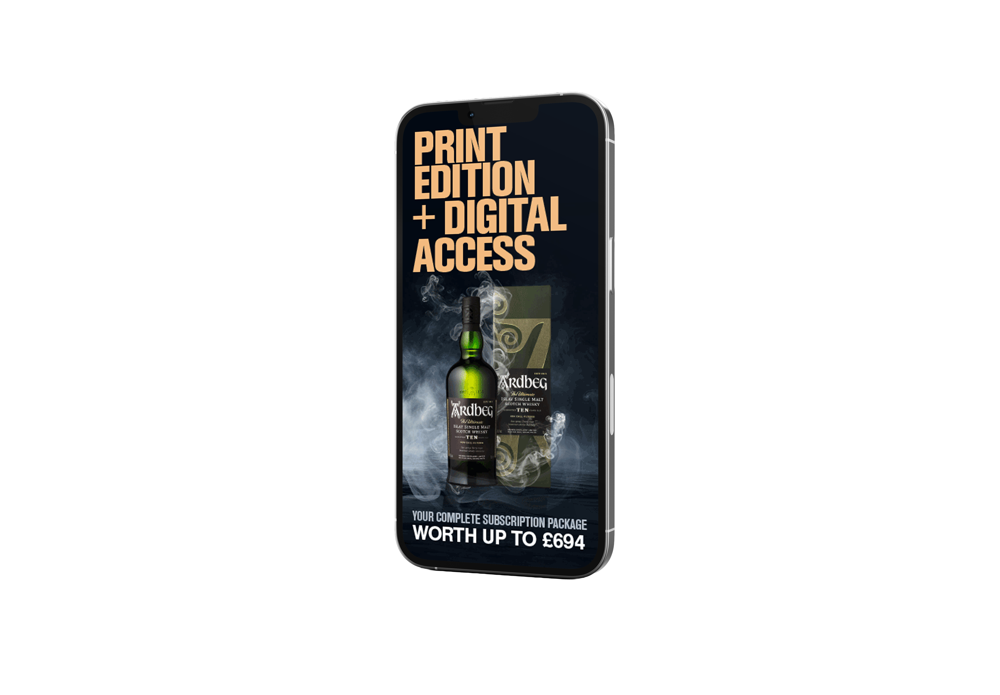

Ardbeg ×
Scottish Farmer
A premium whisky collaboration built to feel native to Scotland's longest-running farming publication — print, digital display and subscription incentives in one campaign.
A premium whisky collaboration built to feel native to Scotland's longest-running farming publication — print, digital display and subscription incentives in one campaign.

The Scottish Farmer is Scotland's longest-running and most widely-read farming publication. As lead designer, I was responsible for the full visual output — from print layouts to multi-channel digital campaigns and commercial partnership assets.
The flagship piece was Ardbeg × Scottish Farmer — a premium Islay whisky brand requiring an editorial aesthetic that felt at home in the publication while carrying the advertiser's own premium positioning.
The campaign banner ran alongside matching laptop and mobile display creative, carrying the same offer from the printed page to the screen.



Create campaign work that resonates with a traditional agricultural audience while modernising digital subscription acquisition.
A visual framework balancing heritage imagery with clean, modern typography — readable on newsprint and on a phone screen alike.
Full-page print advertisements, high-converting digital banners and a bundled subscription incentive built around the Ardbeg partnership.
A unified campaign message that drove subscription sign-ups and strengthened the commercial partnership with Ardbeg.
A bespoke promotional campaign developed in partnership with Ardbeg, the Islay single malt distillery — premium print and digital materials tailored for The Scottish Farmer's readership while sitting comfortably alongside Ardbeg's own brand identity.